정보처리기사(구) (2002-05-26 기출문제)
1과목: 데이터 베이스
1. 한 릴레이션의 기본키를 구성하는 어떠한 속성 값도 널(NULL) 값이나 중복 값을 가질 수 없다는 것을 의미하는 것은?
- 개체 무결성 제약조건
- 참조 무결성 제약조건
- 보안 무결성 제약조건
- 정보 무결성 제약조건
(정답률: 80%)

2. 암호화 기법 중 암호화 알고리즘과 암호화 키는 공개해서 누구든지 평문을 암호문으로 만들 수 있지만 해독 알고리즘과 해독키는 비밀로 유지하는 기법을 무엇이라 하는가?
- DES(Data Encryption Standard) 기법
- 공중키(public-key) 암호화 기법
- 대체(substitution) 암호화 기법
- 전치(transposed) 암호화 기법
(정답률: 84%)
3. 운영체제의 작업 스케줄링 등에 응용되는 것으로 가장 적합한 자료구조는?
- 스택(Stack)
- 큐(Queue)
- 연결리스트(Linked List)
- 트리(Tree)
(정답률: 74%)
4. 다음과 같이 레코드가 구성되어 있을 때, 이진 검색 방법으로 14를 찾을 경우 비교되는 횟수는?
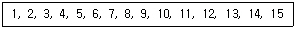
- 2번
- 3번
- 4번
- 5번
(정답률: 74%)
5. 조건을 만족하는 릴레이션의 수평적 부분집합으로 구성하며 연산자의 기호는 그리스문자 시그마(σ)를 사용하는 관계대수 연산자는?
- select 연산자
- project 연산자
- join 연산자
- division 연산자
(정답률: 89%)
6. 데이터베이스의 논리적 구조 표현을 그래프 형태로 표현하며, 일대다(1:n) 관계에 연관된 레코드 타입들을 각각 오너(owner), 멤버(member)라고 하고, 이들의 관계를 오너-멤버 관계라고도 일컫는 데이터 모델은?
- 관계형 데이터 모델
- 네트워크 데이터 모델
- 계층적 데이터 모델
- 객체지향적 데이터 모델
(정답률: 52%)
7. 하나 이상의 테이블로부터 유도되어진 가상 테이블을 뷰(View)라 한다. SQL의 뷰에 대한 설명으로 옳지 않은 것은?
- 뷰(View)를 제거하고자 할때는 DROP 문을 이용한다.
- 뷰(View)의 정의를 변경하고자 할때는 ALTER 문을 이용한다.
- 뷰(View)를 생성하고자 할때는 CREATE 문을 이용한다.
- 뷰(View)의 내용을 검색하고자 할때는 SELECT 문을 이용한다.
(정답률: 69%)
8. 다음 괄호에 적합한 내용은?
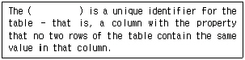
- alternate key
- candidate key
- foreign key
- primary key
(정답률: 65%)
9. there are several properties that atomic trasactions should possess. these properties need be enforced by the concurrency control and recovery methods of the DBMS. which is not included?
- Isolation
- Consistency
- Constraints
- Durability
(정답률: 62%)
10. 어떤 릴레이션 R1의 기본키의 값들과 일치함을 요구하는 다른 릴레이션 R2의 한 속성을 무엇이라 하는가?
- 참조제약(referential constraint
- 외래키(foreign key)
- 기본키(primary key)
- 참조무결성(referential integrity)
(정답률: 66%)
11. 데이터베이스 시스템의 3단계 구조인 내부스키마(Internel schema), 개념스키마(Conceptual schema), 외부스키마(External schema)에 대한 설명의 연결이 옳은 것은?
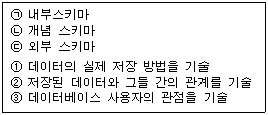
- (ㄱ)-②
- (ㄴ)-①
- (ㄷ)-③
- (ㄱ)-③
(정답률: 78%)
12. 이진트리(binary tree)에서 발생하는 널(NULL) 링크를 트리 운행에 필요한 다른 노드의 포인터로 사용하도록 고안된 트리는?
- Knuth 이진 트리(Knuth binary tree)
- 전 이진 트리(complete binary tree)
- B+ 트리(B+ 트리)
- 스레드 이진 트리(threaded binary tree)
(정답률: 47%)
13. 다음 표와 같은 두 테이블에서 성별이 “여”인 사원의 “성명”, “나이”, “직책”을 구하는 SQL문은?
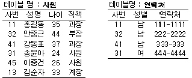
- SELECT * FROM 사원, 연락처 WHERE 성별=“여”
- SELECT 성명, 나이, 직책 FROM 사원, 연락처 WHERE 성별=“여”
- SELECT 성명, 나이, 직책 FROM 사원, 연락처 WHERE 연락처.성별=“여”
- SELECT 성명, 나이, 직책 FROM 사원, 연락처 WHERE 연락처.성별=“여” AND 사원.사번 = 연락처.사번
(정답률: 52%)
14. 다음 두 테이블 R과 S에 대한 아래 SQL 문의 실행결과로 옳은 것은?
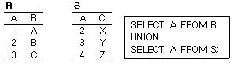
- 1
2
3 - 2
3
4 - 2
3 - 1
2
3
4
(정답률: 72%)
15. 데이터베이스의 등장 이유로 보기 어려운 것은?
- 여러 사용자가 데이터를 공유해야 할 필요가 생겼다.
- 데이터의 수시적인 구조 변경에 대해 응용 프로그램을 매번 수정하는 번거로움을 줄여 보고 싶었다.
- 데이터의 가용성 증가를 위해 중복을 허용하고 싶었다.
- 물리적인 수가 아닌 데이터 값에 의한 검색을 수행하고 싶었다.
(정답률: 84%)
16. 분산 데이터베이스 시스템의 특징으로 적합하지 않은 것은?
- 자료의 공유
- 확장성
- 지역자치성
- 소프트웨어 개발 비용의 감소
(정답률: 92%)
17. 데이터베이스 생명주기에 대한 순서가 옳은 것은?
- 요구조건분석→설계→구현→운영→감시 및 개선
- 설계→요구조선 분석→구현→운영→감시 및 개선
- 설계→구현→요구조건 분석→운영→감시 및 개선
- 요구조건 분석→구현→설계→운영→감시 및 개선
(정답률: 86%)
18. E-R 모델의 그래픽 표현으로 옳지 않은 것은?
- 개체타입-오각형
- 관계타입-마름모
- 속성-원
- 연결-선
(정답률: 81%)
19. 하나의 애트리뷰트가 가질 수 있는 값을 총칭하여 무엇이라 하는가?
- 튜플
- 릴레이션
- 도메인
- 엔티티
(정답률: 72%)
20. 하나의 트랜잭션이 데이터를 액세스하는 동안 다른 트랜잭션이 그 데이터 항목을 엑세스할 수 없도록 하는 방법을 무엇이라고 하는가?
- normalization(정규화)
- locking(로킹)
- logging(사용흔적의 일지화)
- fire wall(방화벽)
(정답률: 72%)
2과목: 전자 계산기 구조
21. Interrupt 체제에서 Priority 부과 방법과 거리가 먼 것은?
- Polling
- Interrupt Service Routine
- Interrupt Request Chain
- Interrupt Priority Chain
(정답률: 49%)
22. I/O operation과 관계없는 것은?
- Channel
- Handshaking
- Interrupt
- Emulation
(정답률: 70%)
23. 메모리로부터 방금 호출한 명령의 다음 명령이 들어있는 메모리의 번지를 지시하는 레지스터는?
- index register
- stack pointer
- program counter
- flag register
(정답률: 71%)
24. 출력 측의 일부가 입력 측에 궤환되어 유발되는 레이스 현상을 없애기 위해 고안된 플립플롭은?
- J-K 플립플롭
- 마스터-슬리브 플립플롭
- R-S 플립플롭
- D 플립플롭
(정답률: 53%)
25. 불대수가 옳지 않은 것은?
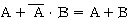
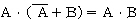
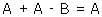
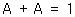
(정답률: 62%)
26. 랜덤(random) 처리가 되지 않는 기억장치는?
- 자기드럼
- 자기 디스크
- 자기 테이프
- 자심
(정답률: 66%)
27. 리커션(recursion) 프로그램에 해당하는 것은?
- 한 루틴(routine)에서 다른 루틴으로 갈 때
- 한 루틴(routine)이 자기를 다시 부를 때
- 다른 루틴(routine)이 다른 루틴을 부를 때
- 한 루틴(routine)이 반복될 때
(정답률: 69%)
28. 명령을 수행하는 과정에서 우선적으로 이루어져야 하는 것은?
- PC←PC+1
- IR←MBR
- MAR←PC
- MBR←PC
(정답률: 70%)
29. 기억장치 중 CAM(Content Addressable Memory)이라고 하는 것은?
- cache 기억장치
- associative 기억장치
- 가상기억장치
- 주 기억장치
(정답률: 72%)
30. 회로의 출력 X 값은?
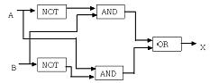
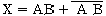
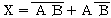
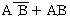
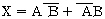
(정답률: 74%)
31. 하드와이어드(hard-wired) 방식이 마이크로 프로그래밍 방식보다 좋은 점은?
- 다양한 어드레스 모드를 갖는다.
- 인스트럭션 세트를 변경하기가 쉽다.
- 컴퓨터의 속도가 향상된다.
- 비교적 복잡한 명령 세트를 가진 시스템에 적합하다.
(정답률: 55%)
32. 0-번지 명령형(zero-address instruction format)을 갖는 컴퓨터 구조 원리는?
- An accumulator extension register
- Virtual memory architecture
- Stack architecture
- Micro-programming
(정답률: 74%)
33. 데이터 처리 명령어 그룹이 아닌 것은?
- 전송 명령어
- 로테이트 명령어
- 논리 명령어
- 산술 명령어
(정답률: 54%)
34. 다음에서 인터럽트 작동순서가 올바른 것은?
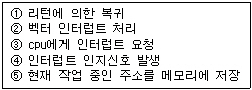
- ③⑤④②①
- ④③⑤②①
- ⑤②③①④
- ①③④⑤②
(정답률: 56%)
35. Von Neuman형 컴퓨터의 연산자들이 가져야 하는 기능 중 가장 거리가 먼 것은?
- 증폭 기능
- 함수연산(functional operation) 기능
- 전달(transfer) 기능
- 제어(control) 기능
(정답률: 80%)
36. 하드웨어 우선순위 인터럽트의 특징은?
- 가격이 싸다
- 응답속도가 빠르다.
- 유연성이 있다.
- 우선순위는 소프트웨어로 결정한다.
(정답률: 74%)
37. 요청한 인터럽트를 처리하기 위해서 이전 프로그램의 상태 보존이 필요한 경우는?
- 0으로 나누기를 하는 경우
- 금지된 영역이나 레지스터에 접근하려 할 경우
- 정의되지 않는 불법 명령을 사용한 경우
- cache memory에서 캐시 miss나 가상 메모리 시스템에서 page fault가 발생한 경우
(정답률: 69%)
38. 주소 지정 방식에 대한 설명이 옳지 않은 것은?
- 고유주소지정방식은 항상 일정한 기능을 수행한다.
- 이미디어트 주소지정 방식은 레지스터의 값을 초과할 때 주로 사용한다.
- 인덱스 주소지정방식은 프로그램 카우터를 사용한다.
- 직접 주소지정방식은 명령어 주소부분에 유효 데이터가 있다.
(정답률: 44%)
39. 누산기에 대한 올바른 설명은?
- 연산장치에 있는 레지스터의 하나로서 연산 결과를 기억하는 장치이다.
- 기억장치 주변에 있는 회로인데 가감승제 계산 논리 연산을 행하는 장치이다.
- 일정한 입력 숫자들을 더하여 그 누계를 항상 보??하는 장치이다.
- 정밀 계산을 위해 특별히 만들어 두어 유효숫자 개수를 늘리기 위한 것이다.
(정답률: 69%)
40. 다음 중 DMA의 설명이 옳지 않은 것은?
- DMA는 Direct Memory Access의 약자이다.
- DMA는 기억장치와 주변장치 사이의 직접적인 데이터 전송을 제공한다.
- DMA는 블록으로 대용량의 데이터를 전송할 수 있다.
- DMA는 입출력 전송에 따른 cpu의 부하를 증가시킬 수 있다.
(정답률: 76%)
3과목: 운영체제
41. 프로세스 제어블록(Prcess Control Block)에 대한 설명으로 옳지 않은 것은?
- 프로세스에 할당된 자원에 대한 정보를 갖고 있다.
- 프로세스의 우선순위에 대한 정보를 갖고 있다.
- 부모 프로세스와 자식 프로세스는 PCB를 공유한다.
- 프로세스의 현 상태를 알 수 있다.
(정답률: 68%)
42. 워킹셋(working set)에 대한 설명으로 옳지 않은 것은?
- 주기억 장치에 적재되지 않으면 스레싱이 발생할 수 있다.
- 실행중인 프로세스가 일정시간 동안 참조하는 페이지들의 집합이다.
- 주기억장치에 적재되어야 효율적인 실행이 가능하다.
- 프로세스 실행 중에는 크기가 변하지 않는다.
(정답률: 60%)
43. 디렉토리의 구조 중 중앙에 마스터 파일 디렉토리가 있고 하부에 사용자 파일 디렉토리가 있는 구조는?
- 단일 디렉토리 구조
- 2단계 디렉토리 구조
- 트리 디렉토리 구조
- 비순환 그래프 디렉토리 구조
(정답률: 66%)
44. 운영체제를 기능에 따라 분류했을 경우 아래의 설명에 해당하는 제어 프로그램(control program)은?
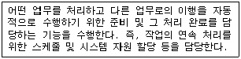
- 감시 프로그램(supervisor program)
- 데이터 관리 프로그램(data management program)
- 작업 제어 프로그램(job control program)
- 문제 프로그램(problem program)
(정답률: 66%)
45. 유닉스 시스템에서 명령어 해석기로 사용자의 명령어를 인식하여 필요한 프로그램을 호출하고 그 명령을 수행하는 기능을 담당하는 것은?
- 유틸리티
- 쉘
- 커널
- IPC
(정답률: 74%)
46. 사용자가 해당 블록의 포인트를 실수로 지워지게 하는 것을 예방하고 블록 접근을 빠르게 하기 위하여 포인터를 모아 놓은 곳을 무엇이라 하는가?
- 파일 할당표(FAT)
- 블록 할당표(BAT)
- 인덱스표(IAT)
- 디렉토리표(DRT)
(정답률: 43%)
47. 교착상태 발생의 필요조건에 해당하지 않는 것은?
- 상호 종속(mutual dependency) 조건
- 점유와 대기(hold and wait) 조건
- 비선점(non-preemption) 조건
- 환형 대기(circular wait) 조건
(정답률: 69%)
48. 모니터(Monitor)에 대한 설명으로 옳지 않은 것은?
- 모니터의 경계에서 상호 배제가 시행된다.
- 자료추상화와 정보 은폐 기법을 기초로 한다.
- 순차적으로 재사용 가능한 특정 공유자원 또는 공유 자원 그룹을 할당하는데 필요한 데이터 및 프로지저를 포함하는 병행성 구조이다.
- 모니터내의 데이터는 모니터 외부에서도 액세스 할 수 있다.
(정답률: 68%)
49. 중앙 컴퓨터와 직접 연결되어 응답이 빠르고 통신비용이 적게 소요되지만, 중앙 컴퓨터에 장애가 발생되면 전체 시스템이 마비되는 분산 시스템의 위상구조는?
- 완전연결(fully connected) 구조
- 성형(star) 구조
- 계층(hierarchy) 구조
- 환형(ring) 구조
(정답률: 75%)
50. 자원이 할당되기를 오랜 시간 동안 기다린 프로세스에 대하여 기다린 시간에 비례하는 폼은 우선순위를 부여하여 가까운 시간 안에 자원이 할당 되도록 하는 기법은?
- 에이징(aging)
- 페이징(paging)
- 스와핑(swapping)
- 스래싱(thrashing)
(정답률: 65%)
51. 분산처리시스템의 장점으로 거리가 먼 것은?
- 확장성이 좋다.
- 보안이 용이하다.
- 가용성이 높다.
- 결함 허용이 가능하다.
(정답률: 81%)
52. 분산 시스템의 투명성(transparency)에 관한 설명으로 옳지 않은 것은?
- 위치(location) 투명성은 하드웨어와 소프트웨어의 물리적 위치를 사용자가 알 필요가 없다.
- 이주(migration) 투명성은 자원들이 한곳에서 다른 곳으로 이동하면 자원들의 이름도 자동으로 바꾸어진다.
- 복제(replication) 투명성은 사용자에게 통지할 필요 없이 시스템 안에 파일들과 자원들의 부가적인 복사를 자유로 할 수 있다.
- 병행(concurrency) 투명성은 다중 사용자들이 자원들을 자동으로 공유할 수 있다.
(정답률: 73%)
53. 하드웨어나 운영체제에 내장된 기능으로 프로그램의 신뢰성 있는 운영과 데이터의 무결성을 보장하기 위한 기능과 관련되는 보안은?
- 외부보안
- 운용보안
- 사용자 인터페이스보안
- 내부 보안
(정답률: 58%)
54. 컴퓨터 시스템을 계층적으로 묘사할 때 운영체제의 위치는 다음그림의 어느부분에 해당되는가?
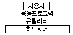
- 사용자와 응용 프로그램 사이
- 응용 프로그램과 유틸리티 사이
- 유틸리티와 하드웨어 사이
- 하드웨어 아래
(정답률: 57%)
55. 메모리 관리기법 중에서 서로 떨어져 있는 여러 개의 낭비 공간을 모아서 하나의 큰 기억 공간을 만드는 작업을 무엇이라고 하는가?
- Swappping
- Coalescing
- Compaction
- Paging
(정답률: 78%)
56. 유닉스의 i-node에 포함되는 내용이 아닌 것은?
- 파일의 사용된 횟수
- 파일 소유자의 사용자 식별
- 파일의 크기
- 파일의 링크 수
(정답률: 56%)
57. 150K의 작업요구시 first fit 과 best fit 전략을 각각 적용할 경우, 할당 영역의 연결이 옳은 것은?
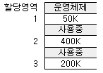
- first fit : 2, best fit : 3
- first fit : 3, best fit : 2
- first fit : 1, best fit : 2
- first fit : 3, best fit : 1
(정답률: 77%)
58. 요구페이징 기법 중 가장 오랫동안 사용되지 않았던 페이지를 먼저 교체하는 기법에 해당되는 것은?
- FIFO
- LFU
- LRU
- NUR
(정답률: 59%)
59. DOS와 유닉스에서 사용되는 명령어 중 서로 관련이 없는 것으로 짝지어진 것은?
- DIR-LS
- COPY-CP
- TYPE-CAT
- CD-CHMOD
(정답률: 56%)
60. 컴퓨터 자체 내의 기계적인 장애나 오류로 인하여 발생하는 인터럽트는?
- 입출력 인터럽트
- 외부 인터럽트
- 기계 검사 인터럽트
- 프로그램 검사 인터럽트
(정답률: 58%)
4과목: 소프트웨어 공학
61. 데이터 모델링에 있어서 ERD(Entity Relationship Diagram)는 무엇을 나타내고자 하는가?
- 데이터 흐름의 표현
- 데이터 구조의 표현
- 데이터 구조들과 그들 간의 관계들을 표현
- 데이터 사전을 표현
(정답률: 81%)
62. CASE 도구의 정보저장소(repository)에 대한 설명으로 거리가 먼 것은?
- 일반적으로 정보저장소는 도구들과 생명 주기 활동, 사용자들, 응용 소프트웨어들 사이의 통신과 소프트웨어 시스템 정보의 공유를 향상시킨다.
- 오늘날 소프트웨어 개발에 관련된 정보저장소의 역할은 응용 프로그램이 담당한다.
- 정보저장소는 도구들의 통합, 소프트웨어 시스템의 표준화, 소프트웨어 시스템 정보의 공유, 소프트웨어 재사용성의 기본이 된다.
- 소프트웨어 시스템 구성 요소들과 시스템 정보가 정보저장소에 의해 관리되므로 소프트웨어 시스템의 유지 보수가 용이해진다.
(정답률: 75%)
63. McCabe 방법에 의한 다음 그래프의 V(G)의 크기는?
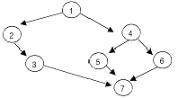
- 1
- 3
- 7
- 13
(정답률: 54%)
64. 어떤 소프트웨어개발을 위해 10명의 개발자가 10개월 동안 참여되었다. 그런데 그 중 7명은 10개월 동안 계속 참여했지만 3명은 3개월 동안만 부분적으로 참여했다. 이 소프트웨어 개발을 위한 인-월(man-month)은 얼마인가?
- 100
- 70
- 79
- 60
(정답률: 75%)
65. 객체지향 분석기법의 하나로 객체 모형, 동적 모형, 기능 모형의 3개 모형을 생성하는 방법은?
- Wirfs-block Method
- Rambaugh Method
- Booch Method
- Jacobson Method
(정답률: 79%)
66. 사용자 인터페이스 설계시 오류 메시지나 경고에 관한 다음의 지침 중 잘못된 것은?
- 메시지는 이해하기 쉬워야 한다.
- 오류로부터 회복을 위한 구체적인 설명이 제공되어야 한다.
- 오류로 인해 발생될 수 있는 부정적인 내용은 가급적 피한다.
- 소리나 색 등을 이용하여 듣거나 보기 쉽게 의미 전달을 하도록 한다.
(정답률: 78%)
67. 검증시험(Validation Test)을 하는데 있어 Beta Test에 대한 설명으로 옳은 것은?
- 사용부서에서 개발 담당자가 시험한다.
- 개발부서와 사용부서가 공동으로 시험한다.
- 개발 부서에서 개발자가 시험을 한다.
- 실업무를 가지고 사용자가 직접 시험한다.
(정답률: 74%)
68. 소프트웨어 시험의 목적은 오류를 찾아내는데 있다. 이의 종류로는 단위시험, 통합시험, 검증시험, 그리고 시스템 시험이 있는데, 이 중에서 소프트웨어가 요구사항에 맞는지를 추적해 보는데 중점을 두고 있는 시험 방법은 무엇인가?
- 단위시험
- 통합시험
- 검증시험
- 시스템 시험
(정답률: 66%)
69. 위험 관리의 일반적인 절차로 적합한 것은?
- 위험식별→위험분석 및 평가→위험관리계획→위험감시 및 조치
- 위험분석 및 평가→위험식별→위험관리계획→위험감시 및 조치
- 위험관리계획→위험감시 및 조치→위험식별→위험분석 및 평가
- 위험감시 및 조치→위험식별→위험분석 및 평가→위험관리계획
(정답률: 67%)
70. 소프트웨어 수명주기 모형 중 폭포수 모형의 단계별 개발과정 순서는?
- 요구사항→분석→설계→코딩→테스트→유지보수
- 요구사항→설계→분석→코딩→테스트→유지보수
- 설계→요구사항→분석→테스트→코딩→유지보수
- 분석→요구사항→설계→테스트→코딩→유지보수
(정답률: 76%)
71. 소프트웨어의 위기현상과 거리가 먼 것은?
- 유지보수의 어려움
- 개발인력의 급증
- 성능 및 신뢰성 부족
- 개발 기간의 지연 및 개발 비용의 증가
(정답률: 81%)
72. 소프트웨어에 대한 변경을 관리하기 위해 개발된 일련의 활동을 나타내며 이런 변경이 전체 비용이 최소화되고 최소한의 방해가 소프트웨어의 현 사용자에게 야기되도록 보증하는 것을 목적으로 하는 것은?
- 위험 관리
- 형상 관리
- 프로젝트 관리
- 유지보수 관리
(정답률: 72%)
73. 모든 객체들은 더 큰 ( )의 멤버이고 그 ( )에 대하여 이미 정의된 개별 자료구조와 연산이 상속된다. 그 때문에 개별객체는 ( )의 인스턴스가 된다. 다음 중 ( )안에 공통으로 들어갈 내용은?
- 메시지
- 클래스
- 상속성
- 정보
(정답률: 76%)
74. 소프트웨어 품질목표 중 허용되지 않는 사용이나 자료의 변경을 제어하는 정도를 나타낸 것은?
- 무결성(integrity)
- 신뢰성(reliability)
- 사용 용이성(userbility)
- 유연성(flexibility)
(정답률: 52%)
75. 블랙박스 테스트 기법에 해당하는 것은?
- mutation testing(fault based testing)
- cause-effect graphing testing
- data flow testing
- control structure testing
(정답률: 52%)
76. 모듈의 응집력(Cohesion)에 대한 설명 중 틀린 것은?
- 모듈의 응집도란 모듈안의 요소들이 서로 관련되어 있는 정도를 말한다.
- 기능적 응집도(Functional Cohesion)는 한 모듈 내부의 한 기능요소에 의한 출력자료가 다음 기능 원소의 입력 자료로서 제공되는 형태이다.
- 교환적 응집도(Communication Cohesion)는 동일한 입력과 출력을 사용하는 소작업들이 모인 모듈에서 볼 수 있다.
- 논리적 응집도(Logical Cohesion)는 유사한 성격을 갖거나 특정형태로 분류되는 처리요소들로 하나의 모듈이 형성되는 경우이다.
(정답률: 32%)
77. 프로젝트 추진 과정에서 예상되는 각종 돌발 상황을 미리 예상하고 이에 대한 적절한 대책을 수립하는 일련의 활동을 무엇이라고 하는가?
- 위험관리
- 일정관리
- 코드관리
- 모형관리
(정답률: 77%)
78. 소프트웨어 생명주기의 전체 단계를 연결시켜주고 자동화시켜주는 통합된 도구를 제공해주는 기술에 해당되는 것은?
- UIMS
- CASE
- 00D
- SADT
(정답률: 85%)
79. 객체 지향 설계 방법론에 대한 설명 중 옳지 않은 것은?
- 구체적인 절차를 표현한다.
- 형식적인 전략으로 기술한다.
- 객체의 속성과 자료구조를 표현한다.
- 서브 클래스와 메시지 특성을 세분화하여 세부사항을 정제화한다.
(정답률: 59%)
80. 소프트웨어 재사용에 대한 설명으로 옳은 것은?
- 기계중심언어는 주기억 장치를 매우 효과적으로 사용할 수 있고 실행속도를 최적화 시킬 수 있다는 점에서 재사용성이 가장 뛰어난 프로그래밍 언어이다.
- 1990년대의 클래스, 객체 등의 소프트웨어 요소는 소프트웨어 재사용성을 크게 향상시켰다.
- 노후된 시스템에 대한 재분석, 문서화 작업을 통해 공학적으로 우수한 시스템을 만드는 것을 의미한다.
- 소프트웨어 재사용은 경제성을 고려하여 사용자의 요구가 있을 때만 적용하는 것이 바람직하다.
(정답률: 52%)
5과목: 데이터 통신
81. 데이터 전달을 위한 회선 제어 절차의 단계를 순서대로 나열한 것은?
- 데이터링크 확립-회선연결-데이터 전송-데이터링크 해제-회선절단
- 회선연결-데이터링크 확립-데이터 전송-데이터링크 해제-회선절단
- 데이터링크 확립-회선연결-데이터 전송-회선절단-데이터링크 해제
- 회선연결-데이터링크 확립-데이터 전송-회선절단-데이터링크 해제
(정답률: 77%)
82. 전송 오류 제어 방식에서 오류 제어용 코드 부가 방식이 아닌 것은?
- 패리티 검사
- 해밍 코드 사용방식
- 순환 중복 검사 방식
- 궤환 전송방식과 연속 전송방식
(정답률: 73%)
83. 다음의 다중화 기법 중 그 단점이 잘못 연결된 것은?
- 주파수 분할 다중화 - 시분할 다중화에 비해 비효율적이다.
- 시분할 다중화 - 가드밴드(guard band)로 인한 대역폭 낭비가 된다.
- 동기식 시분할 다중화 - 타임 슬롯을 고정적으로 할당하여 타임 슬롯이 낭비될 수 있다.
- 비동기식 시분할 다중화 - 제어 회로가 복잡하다.
(정답률: 59%)
84. 데이터 통신망에서 사용되는 일반적인 전송 속도 단위로서 1초간에 운반할 수 있는 데이터의 비트수를 무엇이라 하는가?
- bps
- band
- byte
- throughput
(정답률: 79%)
85. 동기식시분할기와 비동기식시분할기의 특징을 설명한 것이 아닌 것은?
- 비동기식이 동기식에 비해 효율이 우수하다.
- 비동기식 다중화기를 일명 통계적 다중화기라 하며, 링크의 효율성을 높인다.
- 비동기식 다중화기는 데이터를 잠시 저장할 버퍼와 주소 제어회로 등이 별도로 필요하다.
- 비동기식 다중화기는 데이터 전송 각 채널에 대한 고정된 슬롯이 설정된다.
(정답률: 51%)
86. 두 개의 LAN이 데이터 링크 계층에서 서로 결합되어 있는 경우에 이들을 연결하는 요소를 무엇이라 하는가?
- 브리지(bridge)
- 허브(hub)
- 게이트웨이(gateway)
- 모뎀(modem)
(정답률: 75%)
87. 인터넷 프로토콜 아키텍처를 구성하는 4계층이 아닌 것은?
- 표현 계층
- 전송 계층
- 인터넷 계층
- 링크 계층
(정답률: 56%)
88. 송수신 각 2개의 터미널이 다중화기와 공동 통신채널을 통해 정보를 전송하려고 한다. 첫째 터미널은 1200[bps], 두 번째 터미널은 2400[bps]로 동작한다고 할 때, 데이터가 공동 통신 채널을 통해 전송될 수 있는 최소 속도는?
- 1200[bps]
- 1800[bps]
- 2400[bps]
- 3600[bps]
(정답률: 66%)
89. 가상회선 방식에서 통신망 내의 트래픽 제어의 원활한 흐름을 위해 망내의 노드와 노드 사이에 전송하는 패킷의 양이나 속도를 규제하는 제어의 이름은?
- 오류제어
- 순서제어
- 흐름제어
- 경로제어
(정답률: 83%)
90. 전송 효율이 좋고 주로 원거리 전송에 사용하며 정보의 프레임 구성에 따라 문자 동기 방식, 비트 동기 방식, 프레임 동기 방식으로 나누는 전송 방식은?
- 비동기식 전송
- 동기식 전송
- 주파수식 전송
- 비트식 전송
(정답률: 63%)
91. 에러 제어에 사용되는 자동 반복 요청(ARQ) 기법이 아닌 것은?
- stop-and-wait ARQ
- go-back-N ARQ
- auto-repeat ARQ
- selective-repeat ARQ
(정답률: 70%)
92. 프레임(framing) 동기의 목적은?
- 누화방지
- 펄스 안정화
- 각 통화로의 혼선 방지
- 잡음방지
(정답률: 66%)
93. 통신을 구성하는 요소가 아닌 것은?
- 정보를 보내는 장소(source)
- 전송매체(통신회선)
- 정보를 수신하는 장소(destination)
- 정보를 저장하는 장소(storage)
(정답률: 72%)
94. OSI 7계층 프로토콜에서 대화를 구성하고, 동기를 취하며 데이터교환을 관리하기 위한 수단을 제공하는 계층은?
- 데이터 링크 계층
- 네트워크 계층
- 세션계층
- 표현계층
(정답률: 50%)
95. 프로토콜이 전혀 다른 네트워크 사이를 결합하는 것은?
- 리피터(repeater)
- 브리지(bridge)
- 라우터(router)
- 게이트웨이(gateway)
(정답률: 44%)
96. 주파수 분할 다중화기(FDM)의 특징으로 옳지 않은 것은?
- 다중화 효율은 매우 높다.
- 하나의 채널에 주파수 대역별로 전송로가 구성된다.
- 전화 회선에서 1200[baud] 이하의 비동기식에서만 이용된다.
- 채널 간 완충지역으로 보호대역(guard band)이 설치된다.
(정답률: 29%)
97. 경로 설정 알고리즘 중 네트워크 정보를 요구하지 않으며, 송신처와 수신처 사이에 존재하는 모든 경로로 패킷을 전송하는 방법은?
- random 라우팅
- fixed 라우팅
- flooding
- adaptive 라우팅
(정답률: 63%)
98. 각 노드마다 접속하려는 상대방에 미리 붙여둔 번호를 해석해서 접속로의 선정을 행하는 링크 선택방식은?
- 경로 부호 방식
- 착국 부호 방식
- 직접 중계 방식
- 랜덤 중계 방식
(정답률: 54%)
99. 흐름 제어에서 한 번에 여러 개의 프레임을 나누어 전송할 경우 효율적인 기법은?
- 정지 및 대기
- 슬라이딩 윈도우
- 다중 전송
- 적응성 ARQ
(정답률: 66%)
100. 동기 전송에서 주로 사용되는 에러 검출 방법은?
- Parity bit
- Word parity
- Hamming code
- CRC
(정답률: 46%)